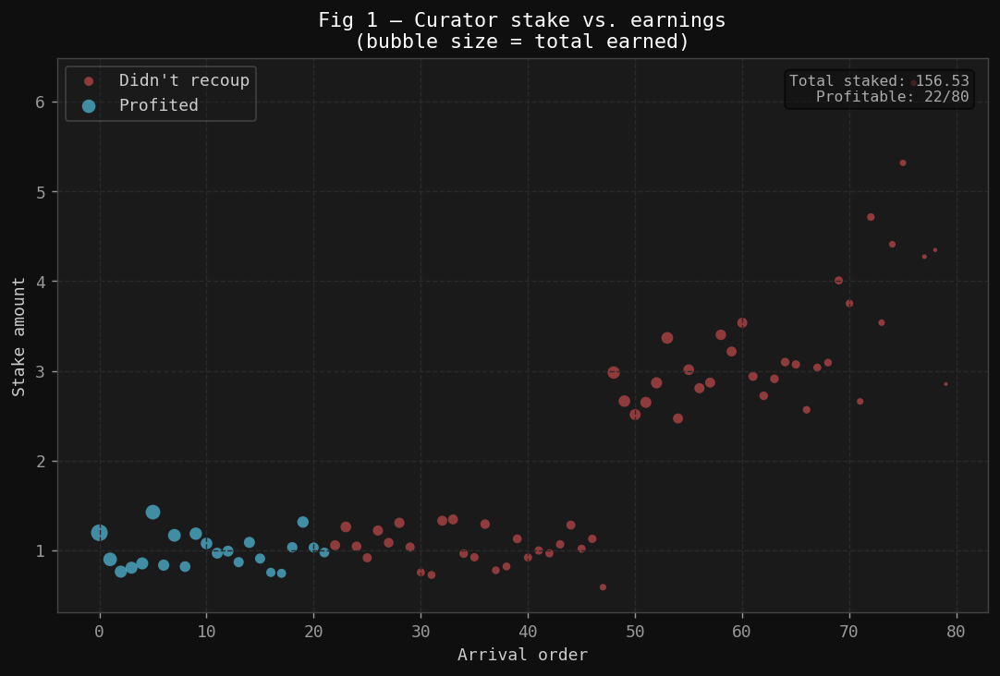
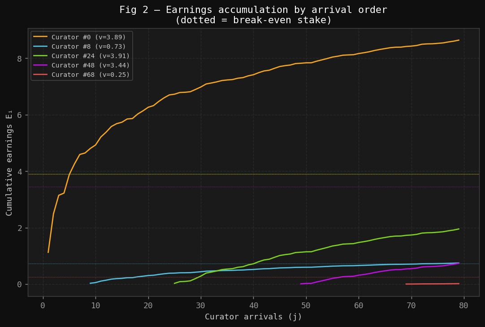
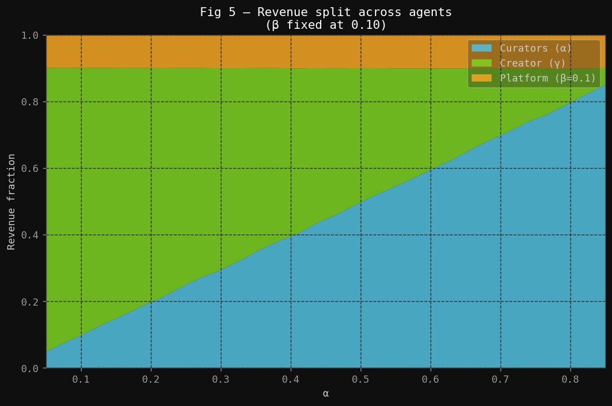
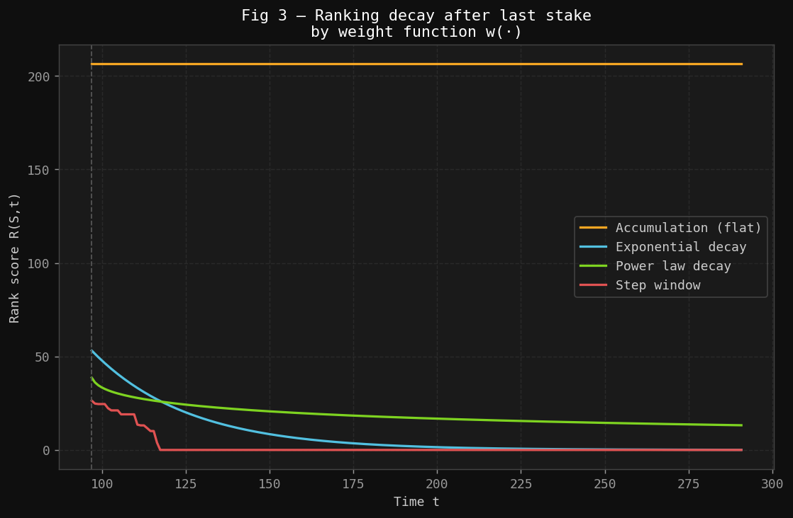
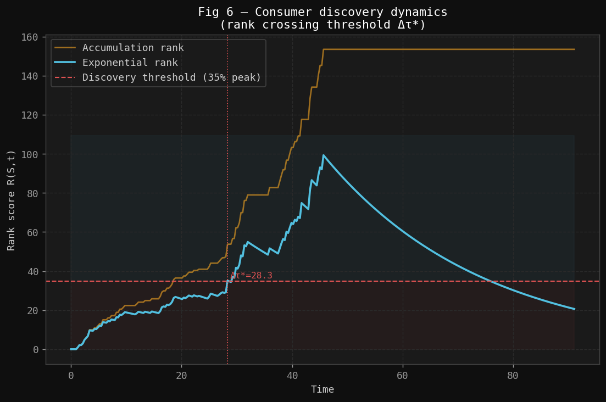
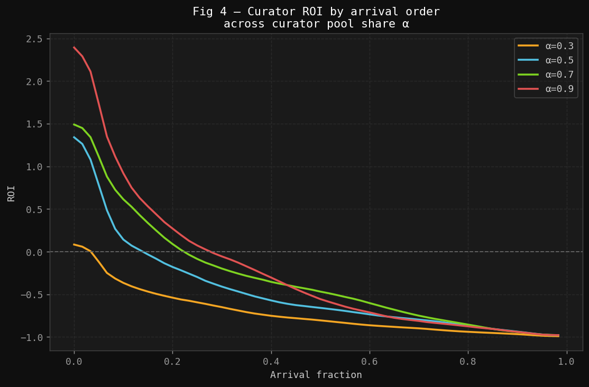

Social platforms face a fundamental coordination problem: content quality is unobservable at publication time, yet consumers need high-quality content to surface quickly. Traditional solutions — editorial curation, engagement algorithms, follower graphs — either centralize judgment or optimize for engagement proxies that diverge from quality.
This document formalizes a community curation pipeline: a market mechanism in which agents voluntarily stake resources on content signals, earning rewards proportional to their contribution and timing. Staking simultaneously (a) compensates early discovery and (b) produces a ranked feed that consumers rely on.
The model generalizes work originally done to describe the Cent/Yours Network payout system [1], extending it to a 4-sided market with explicit feed mechanics, consumer surplus, and formal mechanism evaluation criteria.
2. Primitives
2.1 Signals
Let $\mathcal{S} = \{S_1, S_2, \ldots\}$ be the set of signals (content items, claims, proposals, or any community contribution) published to the platform.
Each signal $S \in \mathcal{S}$ is characterized by:
$q(S) \in [0, 1]$ — true quality, a latent variable not directly observable at publication time
$\tau(S) \in \mathbb{R}_{\geq 0}$ — publication time
2.2 Agents
Role
Description
Action
Incentive
Creator
Produces signal $S$
Publish
Maximize downstream revenue
Curator
Evaluates and endorses $S$
Stake $v_i$ at time $t_i$
Earn from subsequent staking
Consumer
Discovers and consumes $S$
Browse ranked feed
Minimize search cost; maximize quality
Platform
Coordinates the market
Rank feed; extract cut
Sustain operations
Let $\mathcal{C}$, $\mathcal{K}$, $\mathcal{U}$, and $\mathcal{P}$ denote curators, creators, consumers, and the platform respectively. The platform is treated as the mechanism designer, not a strategic agent.
2.3 Stake Space
A stake is any scarce resource committed irrevocably to a signal. In the original Cent model this is currency; in the general case it may be tokens, reputation, attention, or votes. Stakes are assumed cardinal and summable.
3. The Staking Game
3.1 Setup
Fix a signal $S$. Curators arrive and stake sequentially. Let the ordered staking sequence be:
where $v_i > 0$ is the stake of the $i$-th curator and $t_i$ is their arrival time.
Definition (Cumulative Pool). The cumulative pool just before curator $i$ arrives is:
$$V_i^- = \sum_{k=1}^{i-1} v_k, \qquad V_1^- = 0$$
The total pool after all $n$ curators have staked is $V_n = \sum_{k=1}^{n} v_k$.
Definition (Proportional Share). Curator $i$'s proportional share at the moment they stake is:
$$s_i = \frac{v_i}{V_i^- + v_i} = \frac{v_i}{V_{i+1}^-}$$
For $i = 1$, the first curator holds 100% of the pool at entry, but their share dilutes as subsequent curators arrive.
3.2 Payout Parameters
Let $\alpha, \beta \in (0,1)$ with $\alpha + \beta < 1$. Define:
$\alpha$ — curator pool share: fraction of each new stake redistributed to prior curators
$\beta$ — platform share: fraction taken by the platform
$\gamma = 1 - \alpha - \beta$ — creator share: remainder going to the content creator
3.3 Payout Function
Definition (Individual Payout). When curator $j$ stakes $v_j$, the payout to prior curator $i < j$ is:
$$\pi(i,j) = v_j \cdot \alpha \cdot \frac{v_i}{V_j^-}$$
Definition (Total Curator Earnings). The total earnings of curator $i$ over the lifetime of signal $S$:
$$E_i = \sum_{j=i+1}^{n} \pi(i,j) = \alpha \cdot v_i \sum_{j=i+1}^{n} \frac{v_j}{V_j^-}$$
Remark. The inner sum $\Phi_i = \sum_{j=i+1}^{n} \frac{v_j}{V_j^-}$ measures the relative growth of the pool after curator $i$ arrived. Earlier curators face a smaller denominator $V_j^-$ for each subsequent $j$, yielding a larger $\Phi_i$. This is the formal expression of the first-mover advantage.

Figure 1: Each bubble is one curator. Size encodes total earnings; blue = profitable (recouped stake), red = did not recoup. Mixed-normal stake distribution, α = 0.5, n = 80. Curators who arrived early are predominantly profitable regardless of stake magnitude, confirming the first-mover advantage built into $E_i$.

Figure 2: Cumulative earnings $E_i$ over time for five representative curators (uniform stake distribution, α = 0.5). Dotted horizontal lines mark each curator's break-even stake. The earliest curator (orange) captures a large share of every subsequent stake; late-arriving curators barely cross break-even.
Creator revenue:
$$\Pi_{\mathcal{K}} = v_1(1 - \beta) + \sum_{j=2}^{n} v_j \cdot \gamma$$
(The first curator's stake flows entirely to the creator minus platform cut; subsequent stakes split three ways.)
Total curator revenue:
$$\Pi_{\mathcal{C}} = \alpha \cdot (V_n - v_1)$$
Proposition (Conservation). All stake is accounted for:
$$\Pi_{\mathcal{P}} + \Pi_{\mathcal{K}} + \Pi_{\mathcal{C}} = V_n$$

Figure 5: Stacked revenue fractions for each agent class as α varies (β = 0.10 fixed, n = 60). At α ≈ 0.45 curators and creator receive roughly equal shares of non-platform revenue. Increasing α above ~0.7 substantially compresses creator revenue.
4. Feed Mechanics
4.1 Ranking Function
Definition (Rank Score). The rank score of signal $S$ at time $t$ is:
$$R(S, t) = \sum_{i:\, t_i \leq t} w(t - t_i) \cdot v_i$$
where $w : \mathbb{R}_{\geq 0} \to \mathbb{R}_{> 0}$ is a temporal weight function.
The consumer feed at time $t$ is the ordered list of signals sorted by $R(S, t)$ descending. Feed position is a direct function of collective curator behavior.
The choice of $w(\cdot)$ creates a tension between stability (rewarding proven quality) and freshness (surfacing new content).

Figure 3: Rank score $R(S,t)$ under four weight functions after staking stops (dashed vertical line). Accumulation rank never decays, allowing old content to permanently dominate the feed. Exponential and power-law decay gracefully derank stale content; the step window hard-resets at boundary W.
4.3 The Staking–Feed Duality
A central structural observation: the curator payout function and the consumer feed ranking are the same data structure viewed from different perspectives. The staking pool $\{(v_i, t_i)\}$ simultaneously:
Determines curator earnings via $E_i$
Determines signal rank via $R(S, t)$
Incentive design and feed quality are therefore coupled — you cannot change one without affecting the other.
5. Consumer Surplus
5.1 Individual Utility
Consumer $u$ visiting the feed at time $t$ receives utility from consuming signal $S$ at rank position $r(S, t)$:
$$U_u(S, t) = q(S) - c(r(S, t))$$
where $c : \mathbb{N} \to \mathbb{R}_{\geq 0}$ is an increasing search cost function. Natural choices: $c(r) = \kappa \log r$ or $c(r) = \kappa \cdot r$.
A well-functioning mechanism maximizes $CS(t)$: high-$q$ signals rank high, low-$q$ signals sink regardless of stake concentration.
6. Mechanism Quality Metrics
These are the primary empirical targets for validation.
6.1 Signal Accuracy
Definition. At time $t$, signal accuracy is the Spearman rank correlation between total stake and true quality across all signals published before $t$:
$$\rho(t) = \text{Corr}_{\text{Spearman}}\!\left(V_n(S),\, q(S)\right)_{S:\, \tau(S) \leq t}$$
A mechanism with $\rho(t) \to 1$ perfectly ranks by quality. $\rho(t) \approx 0$ means staking is uninformative.
6.2 Discovery Speed
Definition. For signal $S$ and threshold rank $k$, the discovery time is:
$$\Delta\tau^*(S, k) = \inf\!\left\{t : r(S, t) \leq k\right\} - \tau(S)$$
Lower $\Delta\tau^*$ for high-$q$ signals is desirable. Ideally, discovery time is negatively correlated with true quality.

Figure 6: Rank score rising as curators arrive (exponential inter-arrival times). The red dashed line marks the consumer discovery threshold; content becomes visible in the feed at Δτ*. Exponential-decay rank (blue) peaks and then naturally recedes as the content ages; accumulation rank (gold) never falls.
6.3 Curator ROI
Definition. The return on investment for curator $i$:
$$\mathrm{ROI}_i = \frac{E_i - v_i}{v_i} = \frac{E_i}{v_i} - 1$$
The participation constraint requires $\mathbb{E}[\mathrm{ROI}_i] > 0$ for rational agents to stake. Characterizing when this holds — and for which curator positions — is a key analytical target.

Figure 4: Smoothed curator ROI as a function of arrival fraction across four values of α (uniform stake distribution, n = 60). The break-even crossing (ROI = 0) shifts leftward as α decreases, shrinking the profitable participation window. Higher α is necessary but not sufficient for broad curator participation.
7. Open Questions for Validation
Analytical
Participation constraint: For what distributions of $\{v_j\}_{j>i}$ and total $n$ does $\mathbb{E}[E_i] > v_i$? Is there a closed-form threshold?
Equilibrium timing: Is there a Nash equilibrium in the timing game? Does first-mover advantage create a race to stake immediately, or does strategic delay emerge?
Optimal weight function: Which $w(\cdot)$ maximizes $\rho(t)$ under a given stake distribution?
Mechanism robustness: If a coordinated coalition of size $m$ stakes low-quality content, how much does $\rho(t)$ degrade? What minimum honest participation is needed?
Simulation
How do curator earnings differ under uniform vs. power-law stake distributions?
How does the choice of $\alpha$ affect feed accuracy vs. curator participation rate?
What is the effect of time-decay weight $w(\cdot)$ on feed ranking stability?
Empirical
On real platforms (Reddit, Hacker News, Mirror, Sound.xyz), does early endorsement predict final quality as measured by external signals?
Is curator ROI positive in expectation on platforms with explicit curator rewards?
Do platforms with time-decay ranking produce feeds with higher measured consumer satisfaction than pure accumulation platforms?